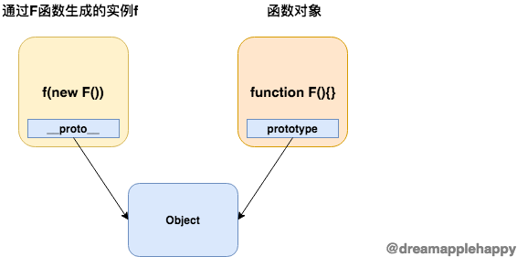

prototype
理解
这个属性一般只存在于函数对象上面； 只要是能够作为构造器的函数，他们都包含这个属性。也就是说，只要这个函数能够通过使用 new 操作符来生成一个新的对象， 那么这个函数肯定具有 prototype 属性。因为我们自定义的函数都可以通过 new 操作符生成一个对象，所以我们自定义的函数都有 prototype 这个属性。
// 函数字面量
console.log((function(){}).prototype); // {constructor: ƒ}
// Date构造器
console.log(Date.prototype); // {constructor: ƒ, toString: ƒ, toDateString: ƒ, toTimeString: ƒ, toISOString: ƒ, …}
// Math.abs 不是构造器，不能通过new操作符生成一个新的对象，所以不含有prototype属性
console.log(Math.abs.prototype); // undefined
作用
函数通过使用 new 操作符生成的一个对象， 这个对象的原型(也就是 __proto__ )指向该函数的 prototype 属性。 那么一个比较简洁的表示 __proto__ 和 prototype 属性之间关系的等式也就出来了，如下所示：
// 其中F表示一个自定义的函数或者是含有prototype属性的内置函数
new F().__proto__ === F.prototype // true
关系

总结
- 存在哪里？ 自定义的函数，或者能够通过new操作符生成一个对象的内置函数
- 代表了什么？ 它表示了某个函数通过new操作符生成的对象的原型
- 有什么作用？ 可以让一个函数通过new操作符生成的许多对象共享一些方法和属性